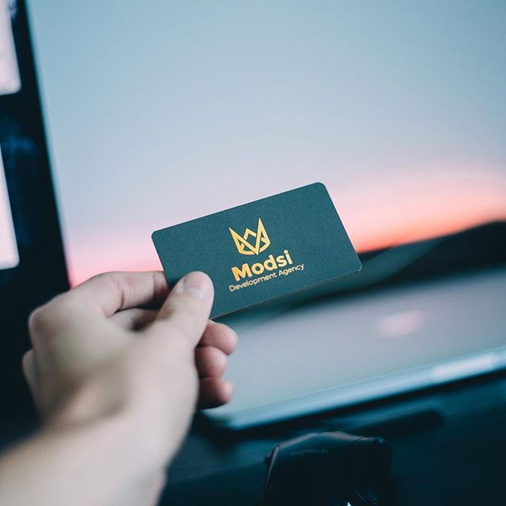
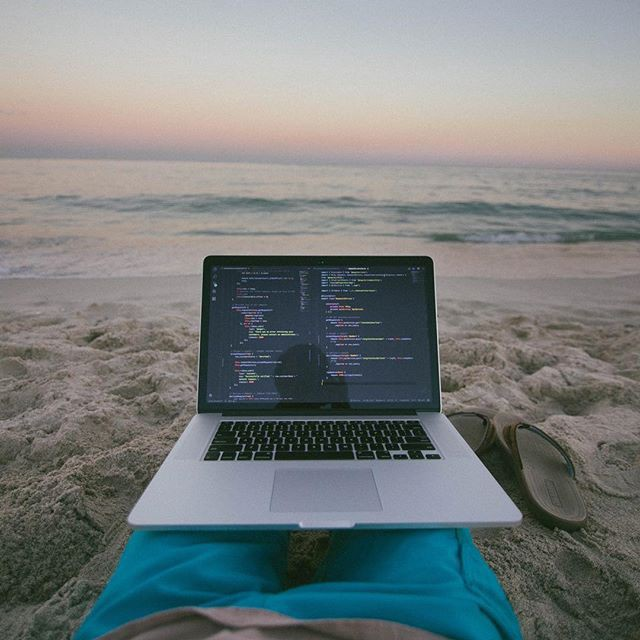

Blake Connally is a software developer, entrepreneur, investor, owner of an online entrepreneurship training company, as well as founder and president of a software development and design company. Oh yeah, and he’s not even 25. Today he takes a break from cruising his Suzuki GSX-R600 to the beaches of Miami to give us some insight.
Take us to the beginning. I know you started out young, but how young? What influenced you to pick up a computer and learn code?
So I actually touched code for the first time when I was around the age of 11–12. I played a game called Runescape and for some reason I always wanted to know how it worked. I ended up setting up my own Runescape server where I hosted and managed the game. That meant I also had access to all of the code running it. The code base was all in Java and I never really knew what I was doing I just would change values, run the compiler and run the game and boom something changed.
I always wanted to find ways to make money online, I was using forums like HackForums and LeakForums to learn about the latest tech scandals. When I was 16 I found out about Bitcoin and started a new exchange business with it. I actually had to have my mom open up financial accounts for it all since I was below 18. I promised her 50% of my profits for doing so. LESSON LEARNED: DO NOT OFFER 50% PROFIT TO ANYONE. About four months in we were averaging 10–15k profit each month, we did $330,000 in revenue in six months. I hired a web developer to develop a website for us and paid him close to $300 for it.
When the Bitcoin business failed due to new government regulations, I had no income. I thought back to when I paid the developer for our website and said… if he can do it and get money why can’t I? That’s when my entire life changed and switched to me coding every day.
Did you always know you’d be this successful? If high school freshman Blake could see Blake today, would he be surprised? What advice would you give your younger self?
I don’t think he would be surprised honestly. I have always been confident in my abilities even when every one else doubts me. I think that’s why it is so easy for me to mentally process some of these things. I always knew what I was capable of, I just knew it would take time and hard work to make those abilities flourish financially.
I don’t think I have any specific advice to give my younger self. Around the eighth grade was when I really turned myself around and got serious. I luckily had a mother who always gave me good and real advice. Not much about financials but more about hanging out with the right people and not worrying about being lonely. I was usually pretty lonely in high school and never felt like I quite fit in with any specific group.
It’s funny now because everyone who was mean to me in high school wants to be my friend now. Weird how that works right?
What advice would you give those looking to start their own company?

Don’t do it until you are ready. You are ready when you have a good financial standing and have cash flow outside of the business. You can’t start a business and have it be your only source of income. Well, you can but it’s not smart.
For the past year I have poured external money into whatever business I am focused on. That’s why my businesses grow fast.
Has your age ever had a negative effect on your business, or have the results always spoke for themselves?
My age has definitely had a negative effect at times, but I find it gets better every day. My reputation is growing and I am getting more referrals. If someone doubts me because my age I just send them my client list, testimonials and previous work.
Most of the time I try not to mention my age to my clients, since most are remote; they don’t need to know anyways.
Being a founder of a software development company and assembling as well as leading a team means you must have some strong soft skills. Is that something you naturally possessed or was that a learned skill?
A learned skill for sure. When I started I was harsh on employees and not very understanding, very closed minded. I had to learn to be nicer and more understanding with people.
Not everyone thinks like you do, so you have to be willing to teach others with an open mind.
What drives you? When you were making a decent living at freelancing what made you want more? What led you to create your own company as well as take ownership of Simple Mentor?

Freedom drives me. My family lived a good life but to do so my mom had to work her ass off to keep us alive. When I saw that growing up I said I would be the one to stop that.
Freelancing was good money, 2–3k a month. But to have financial freedom in my eyes, you need to be able to pay for near anything that could come up and not have to worry about it. Money is only painful to lose when it has power over you.
If you have power over the money, then it doesn’t hurt. When I started making above $6k a month I found suddenly money didn’t hurt to lose. Only rarely it did.
I told my mom in five to ten years I would get her a house on the beach, that is coming much sooner than I thought. That is the reason I work hard to make more every day, to improve the life of my loved ones and friends.
I noticed you’re also into investing. Were you always into the stocks? Should everyone jump in and learn how to invest?
So I used to do stock trading, but I realized investing is actually different to me. Investing is more valuable to me when I invest in new start ups or ideas. I have found it more profitable to put money towards developing a new app as opposed to something in the stock market.
Oklahoma is the homeland and Miami is currently your HQ. Any plans to expand anywhere else?
Not currently, Oklahoma gives me the nice mid-western, homey feel. Miami is great for work opportunities.
What’s next for you?
Stability is my main focus right now. Maintaining my current clients while also keeping a nice cash flow going. The next step is getting someone hired on full-time to work in-office with me.
Craziest thing you’ve seen go down in Miami?
Probably meeting Tory Lanez, a big rapper. We met on the rooftop of my apartment complex and I ended up going to his house to hangout. We talked business and exchanged phone numbers. Crazy experience…
Mo’ money mo’ problems?
Money makes problems if you let it. A good friend of mine says, “Money is NOT the root of all evil, the LOVE of money is the root of all evil”. Don’t make money the only reason you live and work. Find good ways to utilize your money and make goals that benefit other people.
Anything else you’d like to add for the people reading this?
If you are not working to find financial freedom for your family, you should be ashamed of yourself. That’s not me trying to be rude or mean, it’s just the honest truth.
To learn more about Blake’s work check out his online training program at simplementor.io and his development agency at modsi.io. You can also follow him on Instagram @eazy. Follow me on all major social medias @terrance_corley for more web developer related content.